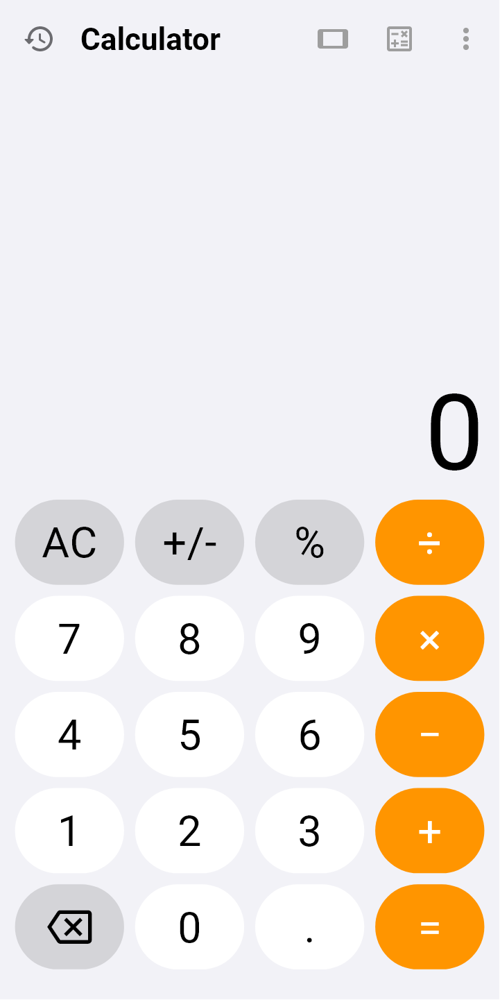
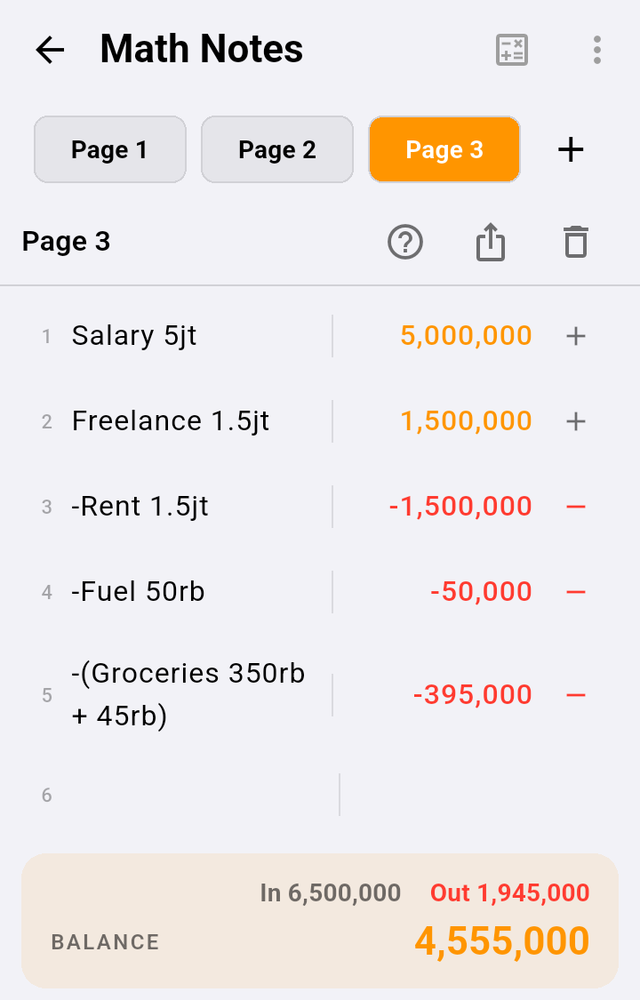

Math Notes
Write sums the way you would in a notebook, one sum per line. Each answer appears on the right straight away, and the total sits at the bottom. Good for shopping, a monthly budget, prices, splitting money, and so on.
1. Opening Math Notes
- On the calculator, tap the mode icon (a small square with + − × =) at the top right.
- Choose your mode opens. On the Modes tab, tap the Math Notes card.
- The sheet closes and Math Notes opens. To go back to the calculator, tap the back arrow at the top left.


2. Writing your first lines
Tap an empty line and type a sum. There is no equals key to press: the answer appears in the right-hand column as you type.
- Words are fine.
Lunch 25rbandGroceries 150rb + 45rbstill work: words are read as labels and ignored. - Press Enter on the keyboard to start a new line.
- To delete a line, swipe it to the left. A red Delete appears on the right and the line goes. Deleted the wrong one? Tap Undo at the bottom of the screen.
- Everything is saved automatically. There is no save button.


3. Writing money: 50rb, 5jt, Rp
Write amounts the way you normally would. Math Notes understands the Indonesian short forms, and works money out exactly, to the cent.
| You write | It reads |
|---|---|
50rb, 50 ribu, 50k | 50,000 |
5jt, 1.5jt, 2 juta | 5,000,000 · 1,500,000 · 2,000,000 |
2M, 1.2 miliar | 2,000,000,000 · 1,200,000,000 |
Rp500.000, Rp 1.250.000,50 | 500,000 · 1,250,000.50 |
5.000.000 (more than one dot) | 5,000,000 |
5.000 without "Rp" reads as 5 (five point zero), not five thousand. Write 5rb or Rp5.000 to be clear.M means billion (miliar), small m means metres. Small k means thousand, capital K means kelvin.4. Variables: giving a number a name
Write name = number to store a number, then use the name on other lines. Change the number and every line that uses it changes too.
price = 25rb, thenprice * 120gives 3,000,000.- A name can be several words:
uang makan = 50rb, thenuang makan * 30. - A variable line is grey and not part of TOTAL: it only stores a number.

5. Using another line's answer
| Write | Meaning |
|---|---|
line3 | the answer on line 3 (the small number on the left) |
prev | the answer on the line before |
total | the sum of every line above |
For example, prev * 10% is 10% of the line before, and line3 - line4 subtracts one line from another.
6. Headings, subtotals and averages
For a monthly budget, split the page into sections.
- Start a line with
#to make a section heading, for example# Incomeor# Spending. Headings are bold and not counted. - Write the amounts underneath.
- Write
subtotalorsumto add up that section only (from the last heading to this line). Writeaveragefor its average. - Mark spending with the + button on the right of the line (see the next section), and what is left shows at the bottom as BALANCE.

Total belanja 50rb reads as 50,000: "Total" is only a label there. It is the keyword only when it stands on its own, such as total or total * 2.7. Percentages and unit conversion
salary * 10%is 10% of the salary.50rb + 10%gives 55,000 (plus 10% of itself).5 kg in lb,10 km to mior2 h ke minconvert units. A conversion is grey and not part of TOTAL.
8. Money in and money out: the + / − button
Every number line has a small button on the far right. It shows whether that line is money in or money out.
- Write the line as usual, for example
Fuel 50rb. Its button shows +: money in. - Tap + to make it money out. The line becomes
-Fuel 50rb, the figure turns red, and the button shows −. - Tap − to make it money in again.
- Typing the minus yourself works too:
-Food 30rbis the same thing. - A line with several amounts is flipped as a whole:
Fuel 50rb + 20rbbecomes-(Fuel 50rb + 20rb), which is −70,000. - Headings, variables, conversions and
subtotallines have no button.
As soon as one line is money out, the bottom of the page shows the breakdown:
| On screen | Meaning |
|---|---|
| In | all the money in |
| Out | all the money out |
| BALANCE | what is left: In minus Out |
For example: Salary 5jt, then Fuel 50rb and Food 30rb marked as money out, gives In 5,000,000, Out 80,000 and BALANCE 4,920,000.


9. TOTAL and BALANCE
If every line is money in (none is negative), the bottom shows TOTAL only. Once a line is money out, it reads BALANCE instead, with In and Out above it.
TOTAL and BALANCE add up every ordinary sum line. These are left out:
#headings,- variable lines (
name = …), - unit conversions,
subtotal,sum,averageandtotallines, so nothing is counted twice.
Fuel 50rb is not marked, it adds to BALANCE. A quick check: money out is always red.10. Pages, saving and export
- Tap + next to the Page 1 button to add a page, for example one page per month. Tap a page's name to switch to it.
- Tap the page title (under the page buttons) to rename it.
- The share icon saves or sends the page as TXT, CSV (for Excel), PDF or DOCX. If there is money out, the export includes In, Out and Balance rows.
- The bin icon deletes the page you have open.
11. Cheat sheet
| To… | Write |
|---|---|
| Add up shopping | Rice 75rb · Cooking oil 2 * 18rb |
| Record money out | tap + on the right of the line, or write -Fuel 50rb |
| Delete a line | swipe it left (you can Undo) |
| Store a number | price = 25rb |
| Use it | price * 12 |
| Start a section | # Spending |
| Add up one section | subtotal or sum |
| Average of one section | average |
| Line 4 minus line 8 | line4 - line8 |
| 10% of the line before | prev * 10% |
| Convert units | 5 kg in lb |